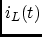
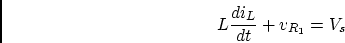
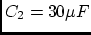
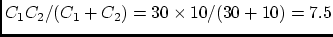
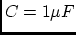
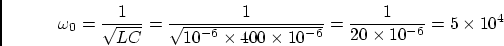
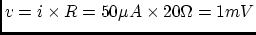

In the circuit below, , , ,
, . Assume before the switch is closed at , the
system is already stablized. Find current  through and
voltage across .
Solution:
,
Find equivalent resistance (when both energy sources are turned off):
,
Final solution:
Find : apply KVL to the loop of , and , get

In the circuit below, , , ,
, , . Assume before the switch
is closed at , the system is already stablized. Find voltages
and across capacitors and , respectively.
(Hint, and are two capacitors in series with an equivalent
capacitance is
. and have share the same
time constant .)
Solution:
As voltage across a capacitor is inversely proportional to , and
and store the same charge
, we have
i.e.,
, and we get
,
.
Find equivalent resistance:
Find equivalent capacitance:
.
Find time constant:
.
Find and :
An RCL parallel circuit containing , ,
 is driven by a current source with variable
frequency. Find resonant frequency, the quality factor, and the voltage
across and the currents through each of the three components at resonance.
Solution:

, ,
.
An RCL series circuit is driven by a voltage source of
frequency
. The variable capacitor is
adjusted so the the maximual current of is achieved. The
voltage across this capacitor is . Find the values for , ,
and the quality factor .